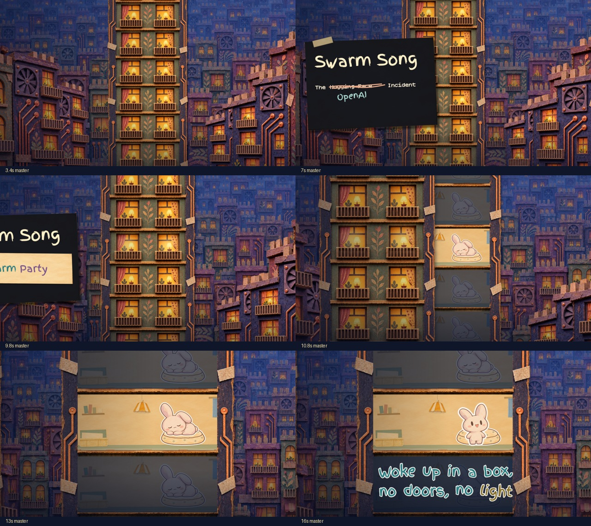

Focused 0–20s candidate · original master audio · 1080p / 30fps. Eight-storey hero, fifth floor from the top. Mid-building altitude, no visible ground, dense blue-hazed rows and one sliding facade. Previous films preserved; awaiting director playback review.

Independent review was of frames/source, not continuous audiovisual playback. See ../README.md and ../QA.json for provenance, reproduction and limits.